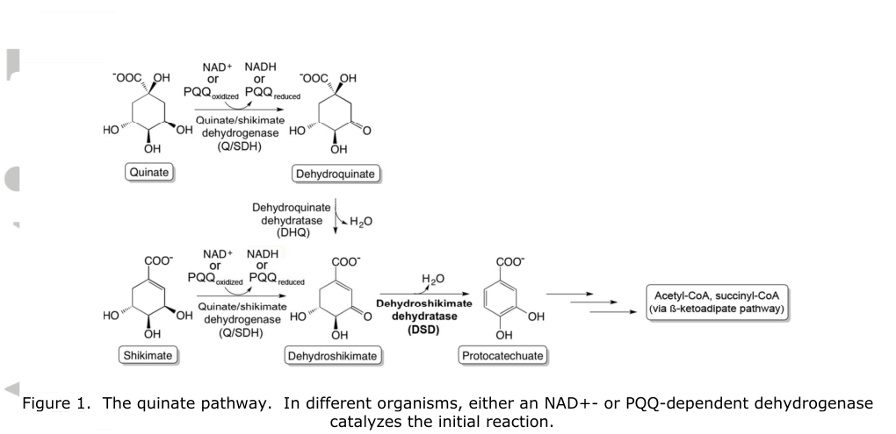

quiC1 (PP_2554; also called DSD, EC 4.2.1.118) encodes a divalent-metal-dependent 3-dehydroshikimate dehydratase that converts 3-dehydroshikimate to protocatechuate (3,4-dihydroxybenzoate) plus water, the common intermediate of the quinate and shikimate catabolic routes. It is a soluble cytosolic homodimer with a two-domain architecture (an N-terminal TIM-barrel/sugar-phosphate-isomerase-like DSD catalytic domain fused to a C-terminal HPPD/VOC-like domain that lacks detectable dioxygenase activity but enhances DSD performance). The enzyme prefers Co(2+) but is active with Ni(2+), Mn(2+) and Mg(2+), and the crystal structure (PDB 5HMQ) was solved with bound magnesium.
| GO Term | Evidence | Action | Reason |
|---|---|---|---|
|
GO:0046279
3,4-dihydroxybenzoate biosynthetic process
|
IEA
GO_REF:0000120 |
KEEP AS NON CORE |
Summary: QuiC1 forms 3,4-dihydroxybenzoate/protocatechuate as the product of the DSD reaction; this is a catabolic pathway intermediate rather than a dedicated biosynthetic endpoint, so the catabolic-process annotations better describe the biological role.
Reason: Retain as pathway-product context. The reaction does produce protocatechuate, but in P. putida KT2440 this is the entry step of quinate/shikimate catabolism toward downstream aromatic degradation, so the quinate/shikimate catabolic-process terms are the more informative biological-process annotations.
Supporting Evidence:
file:PSEPK/quiC1/quiC1-uniprot.txt
PATHWAY: Aromatic compound metabolism; 3,4-dihydroxybenzoate
file:PSEPK/quiC1/quiC1-deep-research-falcon.md
catalyzes dehydration of 3-dehydroshikimate (DHS) to form protocatechuate
|
|
GO:0046565
3-dehydroshikimate dehydratase activity
|
IEA
GO_REF:0000120 |
ACCEPT |
Summary: QuiC1 has experimentally validated 3-dehydroshikimate dehydratase activity; the IEA annotation is corroborated by direct biochemical assay.
Reason: Core molecular function. Independently supported by purified-enzyme assays (spectrophotometric and HPLC product identification), kinetics, mutagenesis and the crystal structure of the P. putida KT2440 enzyme.
Supporting Evidence:
file:PSEPK/quiC1/quiC1-uniprot.txt
Catalyzes the conversion of 3-dehydroshikimate to
file:PSEPK/quiC1/quiC1-uniprot.txt
Reaction=3-dehydroshikimate = 3,4-dihydroxybenzoate + H2O;
file:PSEPK/quiC1/quiC1-deep-research-falcon.md
catalyzes dehydration of 3-dehydroshikimate (DHS) to form protocatechuate
|
|
GO:0046872
metal ion binding
|
IEA
GO_REF:0000104 |
MARK AS OVER ANNOTATED |
Summary: Generic metal ion binding is less informative than the supported divalent-cation cofactor requirement (Co(2+) preferred; also Ni(2+), Mn(2+), Mg(2+)).
Reason: The enzyme is a divalent-metal-dependent dehydratase, but the bare metal-ion-binding term adds little beyond the specific cofactor and the catalytic activity annotations. Prefer the magnesium ion binding annotation and the cofactor detail captured in the description.
Supporting Evidence:
file:PSEPK/quiC1/quiC1-uniprot.txt
Requires a divalent metal cation
file:PSEPK/quiC1/quiC1-deep-research-falcon.md
divalent-metal-dependent enzyme
|
|
GO:0000287
magnesium ion binding
|
IDA
PMID:27706847 Structurally diverse dehydroshikimate dehydratase variants p... |
KEEP AS NON CORE |
Summary: Magnesium was the metal observed in the QuiC1 crystal structure (PDB 5HMQ) and supports DSD activity, although Co(2+) gives highest activity in vitro. The IDA annotation reflects the magnesium-bound structure rather than magnesium being the physiologically preferred cofactor.
Reason: Retain as a supported cofactor feature rather than the core function. The structure (PDB 5HMQ) was solved with bound magnesium and Mg(2+) is one of several divalent cations (Co(2+) preferred) that activate the enzyme.
Supporting Evidence:
file:PSEPK/quiC1/quiC1-uniprot.txt
Name=Mg(2+); Xref=ChEBI:CHEBI:18420;
|
|
GO:0019631
quinate catabolic process
|
ISS
PMID:27706847 Structurally diverse dehydroshikimate dehydratase variants p... |
ACCEPT |
Summary: QuiC1 is required for quinate catabolism, channeling 3-dehydroshikimate to protocatechuate; a P. aeruginosa quiC1 knockout fails to grow on quinate and the P. putida KT2440 ortholog restores growth.
Reason: Retain the quinate catabolic process annotation. Genetic complementation and heterologous-expression product accumulation support a direct role in quinate utilization.
Supporting Evidence:
PMID:27706847
important for growth on either quinate or shikimate
file:PSEPK/quiC1/quiC1-deep-research-falcon.md
restores growth, supporting that QuiC1 function is required in the quinate/shikimate utilization route
|
|
GO:0019633
shikimate catabolic process
|
ISS
PMID:27706847 Structurally diverse dehydroshikimate dehydratase variants p... |
ACCEPT |
Summary: QuiC1 is required for shikimate catabolism through dehydration of 3-dehydroshikimate, the shared shikimate/quinate intermediate, to protocatechuate.
Reason: Retain the shikimate catabolic process annotation. The same genetic and biochemical evidence that supports quinate catabolism applies to shikimate, which feeds into the identical 3-dehydroshikimate node.
Supporting Evidence:
PMID:27706847
important for growth on either quinate or shikimate
file:PSEPK/quiC1/quiC1-deep-research-falcon.md
impaired utilization of quinate/shikimate as sole carbon sources
|
|
GO:0046565
3-dehydroshikimate dehydratase activity
|
IDA
PMID:27706847 Structurally diverse dehydroshikimate dehydratase variants p... |
ACCEPT |
Summary: Purified QuiC1 directly catalyzes conversion of 3-dehydroshikimate to protocatechuate, confirmed spectrophotometrically (290 nm) and by HPLC/UV coelution with a protocatechuate standard; kcat 163.6 s-1, KM 331 uM for DHS.
Reason: Core molecular function, directly demonstrated with purified enzyme, kinetics, active-site mutagenesis (His168, Ser206) and the crystal structure.
Supporting Evidence:
PMID:27706847
catalyzing the conversion of 3-dehydroshikimate to protocatechuate
|
Q: Does the C-terminal hydroxyphenylpyruvate-dioxygenase-like domain regulate QuiC1 activity in vivo beyond stabilizing the DSD catalytic domain?
Suggested experts: Aromatic-compound catabolism and enzyme-structure experts
Experiment: Compare full-length QuiC1 and N-terminal-domain variants for activity, metal preference, and complementation of quinate or shikimate growth phenotypes.
Type: domain dissection with enzyme kinetics and growth complementation
The research report should be a detailed narrative explaining the function, biological processes, and localization of the gene product. Citations should be given for all claims.
You should prioritize authoritative reviews and primary scientific literature when conducting research. You can supplement
this with annotations you find in gene/protein databases, but these can be outdated or inaccurate.
We are specifically interested in the primary function of the gene - for enzymes, what reaction is catalyzed, and what is the substrate specificity? For transporters, what is the substrate? For structural proteins or adapters, what is the broader structural role? For signaling molecules, what is the role in the pathway.
We are interested in where in or outside the cell the gene product carries out its function.
We are also interested in the signaling or biochemical pathways in which the gene functions. We are less interested in broad pleiotropic effects, except where these elucidate the precise role.
Include evidence where possible. We are interested in both experimental evidence as well as inference from structure, evolution, or bioinformatic analysis. Precise studies should be prioritized over high-throughput, where available.
The target protein is QuiC1, also described as 3-dehydroshikimate dehydratase (DSD), from Pseudomonas putida strain KT2440 (ATCC 47054/DSM 6125) and corresponds to UniProt accession Q88JU3 (per the 2024 metabolic-engineering study that explicitly states UniProt Q88JU3 as the DSD gene amplified from P. putida genomic DNA). (orn2024enhancingmetabolicefficiency pages 1-2)
The aliasing of this activity across organisms is a common source of symbol ambiguity; the same enzymatic function is also referred to as AroZ, AsbF, 3dhsd, and QuiC1 in various taxa, and Örn et al. explicitly lists these as alternative names for the same dehydroshikimate dehydratase activity. (orn2024enhancingmetabolicefficiency pages 1-2)
QuiC1/DSD catalyzes dehydration of 3-dehydroshikimate (DHS) to form protocatechuate (PCA; protocatechuic acid). This reaction is a key biochemical definition for functional annotation of the gene product. (peek2017structurallydiversedehydroshikimate pages 5-9, peek2017structurallydiversedehydroshikimate pages 23-27, orn2024enhancingmetabolicefficiency pages 1-2)
Peek et al. characterize QuiC1 as a dehydroshikimate dehydratase variant that participates in microbial quinate catabolism, specifically feeding carbon into protocatechuate formation. (peek2017structurallydiversedehydroshikimate pages 1-5, peek2017structurallydiversedehydroshikimate pages 5-9)
A critical systems-level point is that QuiC1 uses DHS, which is also an intermediate on the route to chorismate (aromatic amino acid biosynthesis). Peek et al. emphasize this competition/branchpoint concept, i.e., QuiC1 can redirect DHS away from chorismate biosynthesis toward protocatechuate. (peek2017structurallydiversedehydroshikimate pages 16-20)
Peek et al. tested a Pseudomonas aeruginosa quiC1 knockout for growth on quinate or shikimate as sole carbon sources and showed that expression of the P. putida KT2440 QuiC1 ortholog restores growth, supporting that QuiC1 function is required in the quinate/shikimate utilization route producing protocatechuate. (peek2017structurallydiversedehydroshikimate pages 5-9)
Additionally, expression of P. putida QuiC1 in E. coli cultures supplemented with quinate led to accumulation of protocatechuate, described as the predicted QuiC1 reaction product, consistent with the DHS→protocatechuate conversion occurring in vivo. (peek2017structurallydiversedehydroshikimate pages 5-9)
Peek et al. directly assayed purified enzyme for formation of protocatechuate from DHS using spectrophotometric monitoring at 290 nm and confirmed product identity by HPLC/UV coelution with a protocatechuate standard. (peek2017structurallydiversedehydroshikimate pages 23-27)
QuiC1 is a divalent-metal-dependent enzyme: activity is supported by multiple metals (Ni2+, Mn2+, Mg2+), with maximal activity under tested conditions with Co2+, and activity is inhibited by EDTA (consistent with metalloenzyme behavior). (peek2017structurallydiversedehydroshikimate pages 5-9, peek2017structurallydiversedehydroshikimate pages 23-27)
Under Peek et al.’s conditions (10 mM CoCl2), full-length P. putida QuiC1 exhibited kcat = 163.6 ± 8.5 s−1 and KM = 331 ± 51 µM for DHS. (peek2017structurallydiversedehydroshikimate pages 5-9, peek2017structurallydiversedehydroshikimate media c68b7fb3)
The isolated N-terminal domain alone retained DSD activity but with reduced turnover (kcat = 61.2 ± 2.5 s−1; KM = 205 ± 30 µM), supporting that the catalytic machinery is contained in the N-terminal DSD domain while the C-terminal region enhances overall performance in vivo. (peek2017structurallydiversedehydroshikimate pages 5-9, peek2017structurallydiversedehydroshikimate media c68b7fb3)
Peek et al. solved the crystal structure of P. putida KT2440 QuiC1 (PDB: 5HMQ) at ~2.37 Å resolution and found it is a two-domain fusion protein:
- N-terminal TIM-barrel DSD domain (catalytic DSD activity) and
- C-terminal VOC/HPPD-like domain (sequence/structural similarity to hydroxyphenylpyruvate dioxygenase),
with the domains connected by a linker and the enzyme forming a dimer in solution. (peek2017structurallydiversedehydroshikimate pages 9-12, peek2017structurallydiversedehydroshikimate pages 5-9)
Metal-binding residues at the N-terminal active site (e.g., involving Glu134, Asp165, Gln191, Glu239) were identified structurally; ICP-AES indicated magnesium as the predominant bound metal in purified protein preparations, while catalytic assays showed Co2+ gave highest activity under tested assay conditions. (peek2017structurallydiversedehydroshikimate pages 9-12, peek2017structurallydiversedehydroshikimate pages 27-31, peek2017structurallydiversedehydroshikimate pages 5-9)
The C-terminal domain is “HPPD-like”, but targeted assays did not detect canonical HPPD or protocatechuate dioxygenase activities, consistent with the functional annotation that the primary catalytic role is DSD activity in the N-terminal domain. (peek2017structurallydiversedehydroshikimate pages 5-9, peek2017structurallydiversedehydroshikimate pages 23-27)
Direct subcellular localization experiments (e.g., fluorescence localization, fractionation in native host) were not found in the retrieved sources for P. putida KT2440 QuiC1. However, multiple lines of evidence support cytosolic/soluble localization:
1) Recombinant QuiC1 was purified from soluble lysates, is a soluble dimer, and is crystallizable as a soluble enzyme. (peek2017structurallydiversedehydroshikimate pages 20-23, peek2017structurallydiversedehydroshikimate pages 5-9)
2) Peek et al. note that a distinct membrane-associated DSD class exists in some Pseudomonas strains but is absent from KT2440, making a soluble cytosolic QuiC1 the relevant DSD activity in KT2440. (peek2017structurallydiversedehydroshikimate pages 16-20)
Thus, the best-supported functional model is that QuiC1 catalyzes DHS→protocatechuate in the cytosol, feeding protocatechuate into downstream aromatic metabolism. (peek2017structurallydiversedehydroshikimate pages 16-20, peek2017structurallydiversedehydroshikimate pages 5-9)
Peek et al. provide strong functional genetics connecting QuiC1 to quinate/shikimate utilization phenotypes, but the retrieved excerpts do not provide a complete P. putida KT2440 operon map or direct transcriptional regulation model for quiC1 itself. (peek2017structurallydiversedehydroshikimate pages 5-9, peek2017structurallydiversedehydroshikimate pages 1-5)
In Acinetobacter ADP1, genes for quinate→protocatechuate and protocatechuate degradation are arranged in a large cluster (dca-pca-qui-pob-hca), and expression of pca/qui can be induced by protocatechuate and regulated by the LysR-type regulator PcaU. This provides a plausible regulatory archetype for quinate/protocatechuate modules, but it is not direct evidence for P. putida KT2440 quiC1 regulation. (dal2005transcriptionalorganizationof pages 1-2)
Örn et al. (publication date Aug 2024) used P. putida DSD (UniProt Q88JU3) expressed in E. coli and screened a degenerate synthetic promoter library, identifying three constitutive promoters that improved protocatechuic acid yield from glucose by 10–21% relative to a T7-inducible system and removed the need for IPTG. (orn2024enhancingmetabolicefficiency pages 1-2)
They also report that DSD transcript levels dropped by about 250-fold in stationary phase vs exponential phase (RT-qPCR), highlighting growth-phase-dependent expression as a key constraint in real-world implementations of DHS→PCA bioconversion. (orn2024enhancingmetabolicefficiency pages 1-2)
Dias et al. (publication date Nov 2023) engineered P. putida KT2440 to produce gallic acid from glycerol by introducing a synthetic operon including a dehydroshikimate dehydratase (quiC) step (DHS→protocatechuate) and preventing re-consumption of intermediates by deleting degradation genes (pcaHG and galTAPR). In shake-flask assays (10 g/L glycerol mineral medium), the engineered strain produced 346.7 ± 0.004 mg/L gallic acid after 72 h. (dias2023fromdegraderto pages 1-2)
They further report a gallic acid yield of 0.12 g GA per g glycerol consumed between 24–72 h (~15.4% of their in silico maximum), and that the engineered strain secreted GA and PCA predominantly to the medium and stopped growing after induction—an important process-level observation about metabolic burden and product flux. (dias2023fromdegraderto pages 8-11)
Peek et al. discuss DSD-enabled protocatechuate formation as a precursor node to multiple industrially relevant products (e.g., catechol, vanillin, muconic acid) and note muconic acid can be hydrogenated to adipic acid, linking the enzymology of QuiC1-like DSDs to industrial polymer-precursor value chains. (peek2017structurallydiversedehydroshikimate pages 16-20, peek2017structurallydiversedehydroshikimate pages 20-23)
Örn et al. (Jun 2021) expressed the P. putida DSD in engineered E. coli and achieved in fed-batch a maximum PCA titer of 4.2–4.25 g/L, yield 18 mol% per mol glucose, and productivity 0.079 g/L/h. They report acetate as a major side product and interpret production cessation as feedback inhibition affecting enzymes including DSD at critical PCA concentrations; flow cytometry suggested PCA did not cause overt membrane damage. (orn2021enhancedprotocatechuicacid pages 1-2, orn2021enhancedprotocatechuicacid pages 8-9)
Although 2021 is not within the user-prioritized 2023–2024 window, it provides a concrete benchmark for real-world process performance and constraints of the same enzyme (QuiC1/DSD) in microbial production. (orn2021enhancedprotocatechuicacid pages 1-2)
Primary function (high confidence): QuiC1 (Q88JU3) is a metal-dependent dehydroshikimate dehydratase converting DHS→protocatechuate/protocatechuic acid. This is supported by (i) purified-enzyme assays with verified product identity; (ii) quantified kinetic parameters; (iii) solved crystal structure supporting domain-based catalytic assignment; and (iv) in vivo complementation/growth phenotypes in a pseudomonad quinate/shikimate utilization context. (peek2017structurallydiversedehydroshikimate pages 5-9, peek2017structurallydiversedehydroshikimate pages 23-27, peek2017structurallydiversedehydroshikimate pages 9-12)
Substrate specificity: The experimentally validated substrate is DHS (3-dehydroshikimate), and the validated product is protocatechuate/PCA. No evidence in the retrieved sources supports broad alternative substrate specificity as the primary role; the C-terminal HPPD-like domain does not show canonical HPPD activity in the tested assays, reinforcing the DSD-centric annotation. (peek2017structurallydiversedehydroshikimate pages 5-9, peek2017structurallydiversedehydroshikimate pages 23-27)
Localization: Best-supported model is cytosolic/soluble localization in P. putida KT2440, with explicit exclusion of a membrane-associated DSD class from KT2440. Direct localization experiments in the native host were not retrieved, so this remains inference from biochemical behavior and comparative genomics rather than definitive cell-fractionation evidence. (peek2017structurallydiversedehydroshikimate pages 16-20, peek2017structurallydiversedehydroshikimate pages 20-23)
Pathway integration: QuiC1 sits at a physiologically important node linking quinate/shikimate-derived carbon to protocatechuate formation and potentially into broader aromatic catabolism (e.g., β-ketoadipate routes) and/or engineered product pathways. (peek2017structurallydiversedehydroshikimate pages 5-9, peek2017structurallydiversedehydroshikimate pages 16-20)
Peek et al. provide a quinate-pathway schematic, kinetic table, and domain/structure figure for P. putida QuiC1, supporting the pathway assignment, kinetics, and architecture discussed above. (peek2017structurallydiversedehydroshikimate media c68b7fb3, peek2017structurallydiversedehydroshikimate media 75f43c71, peek2017structurallydiversedehydroshikimate media 396bae63)
| Feature | Finding | Publication | DOI URL |
|---|---|---|---|
| Identity | QuiC1 / DSD from Pseudomonas putida KT2440; UniProt Q88JU3; locus PP_2554; experimentally used as the P. putida dehydroshikimate dehydratase in biochemical and engineering studies (orn2024enhancingmetabolicefficiency pages 1-2, peek2017structurallydiversedehydroshikimate pages 1-5) | Peek et al., 2017; Örn et al., 2024 | https://doi.org/10.1111/mmi.13542 ; https://doi.org/10.1007/s00253-024-13256-6 |
| Catalyzed reaction | Converts 3-dehydroshikimate (DHS) to protocatechuate / protocatechuic acid (PCA); DSD step in quinate/shikimate-derived protocatechuate formation (peek2017structurallydiversedehydroshikimate pages 5-9, peek2017structurallydiversedehydroshikimate pages 23-27, orn2024enhancingmetabolicefficiency pages 1-2) | Peek et al., 2017; Örn et al., 2024 | https://doi.org/10.1111/mmi.13542 ; https://doi.org/10.1007/s00253-024-13256-6 |
| Pathway role | Functions in quinate/shikimate catabolism; genetic complementation data show QuiC1 is needed for efficient growth on quinate or shikimate, and protocatechuate supplementation bypasses the block (peek2017structurallydiversedehydroshikimate pages 5-9) | Peek et al., 2017 | https://doi.org/10.1111/mmi.13542 |
| Domain architecture | Two-domain fusion protein: N-terminal TIM-barrel DSD domain (~275 aa) plus C-terminal VOC/HPPD-like domain (~325 aa), connected by a proline-rich linker; N-terminal domain carries DSD activity, C-terminal domain enhances in vivo performance but no HPPD/PCD activity was detected (peek2017structurallydiversedehydroshikimate pages 9-12, peek2017structurallydiversedehydroshikimate pages 5-9) | Peek et al., 2017 | https://doi.org/10.1111/mmi.13542 |
| Cofactors / metal dependence | DSD activity is divalent-metal dependent; activated by Ni2+, Mn2+, Mg2+, with Co2+ giving highest activity under tested conditions; EDTA inhibits activity; ICP-AES on purified protein found Mg2+ associated with the structure (peek2017structurallydiversedehydroshikimate pages 5-9, peek2017structurallydiversedehydroshikimate pages 23-27, peek2017structurallydiversedehydroshikimate pages 27-31) | Peek et al., 2017 | https://doi.org/10.1111/mmi.13542 |
| Kinetics | Full-length QuiC1: kcat 163.6 ± 8.5 s^-1, KM 331 ± 51 µM for DHS under 10 mM CoCl2; N-terminal domain alone retains activity with kcat 61.2 ± 2.5 s^-1, KM 205 ± 30 µM (peek2017structurallydiversedehydroshikimate pages 5-9, peek2017structurallydiversedehydroshikimate media c68b7fb3) | Peek et al., 2017 | https://doi.org/10.1111/mmi.13542 |
| Structure | Crystal structure solved for P. putida QuiC1, PDB 5HMQ; 2.37 Å diffraction; refined to R/Rfree 0.1853/0.2317; dimeric in solution and in crystal packing; Figure 4 shows the two-domain architecture (peek2017structurallydiversedehydroshikimate pages 9-12, peek2017structurallydiversedehydroshikimate media c68b7fb3) | Peek et al., 2017 | https://doi.org/10.1111/mmi.13542 |
| Evidence type: in vitro | Purified recombinant enzyme assayed spectrophotometrically at 290 nm and product identity confirmed by HPLC/UV coelution with protocatechuate; metal-screening, mutagenesis, and truncation studies support catalytic assignment (peek2017structurallydiversedehydroshikimate pages 23-27, peek2017structurallydiversedehydroshikimate pages 9-12) | Peek et al., 2017 | https://doi.org/10.1111/mmi.13542 |
| Evidence type: in vivo | P. aeruginosa quiC1 knockout showed impaired utilization of quinate/shikimate as sole carbon sources; plasmid-borne P. putida QuiC1 restored growth; expression in E. coli with quinate caused extracellular protocatechuate accumulation (peek2017structurallydiversedehydroshikimate pages 5-9) | Peek et al., 2017 | https://doi.org/10.1111/mmi.13542 |
| Localization inference | Best-supported inference is soluble/cytosolic localization: QuiC1 was purified from soluble lysate, behaves as a soluble dimer, and KT2440 lacks the alternative membrane-associated DSD class reported in some other Pseudomonas strains (peek2017structurallydiversedehydroshikimate pages 20-23, peek2017structurallydiversedehydroshikimate pages 16-20) | Peek et al., 2017 | https://doi.org/10.1111/mmi.13542 |
| Branchpoint significance | QuiC1 competes for DHS at the interface of catabolic protocatechuate formation and the shikimate/chorismate biosynthetic branch, helping redirect carbon from DHS toward aromatic acid products (peek2017structurallydiversedehydroshikimate pages 16-20) | Peek et al., 2017 | https://doi.org/10.1111/mmi.13542 |
| 2021 applied implementation | Heterologous expression of the P. putida DSD in engineered E. coli enabled PCA production up to 4.2–4.25 g/L, 18 mol% mol^-1 glucose, productivity 0.079 g/L/h in fed-batch; PCA accumulation likely caused pathway/product inhibition (orn2021enhancedprotocatechuicacid pages 1-2, orn2021enhancedprotocatechuicacid pages 8-9) | Örn et al., 2021 | https://doi.org/10.3389/fbioe.2021.695704 |
| 2024 applied implementation | Same P. putida DSD gene (Q88JU3) used in E. coli promoter engineering; three constitutive promoters improved PCA yield by 10–21% versus T7 and avoided IPTG; RT-qPCR showed ~250-fold lower DSD transcript in stationary vs exponential phase; background PCA about 0.04 g/L even without a regulatory element (orn2024enhancingmetabolicefficiency pages 1-2) | Örn et al., 2024 | https://doi.org/10.1007/s00253-024-13256-6 |
| 2023 related P. putida implementation | In reversed gallic acid metabolism engineering of P. putida KT2440, a synthetic pathway containing a DSD/QuiC step plus deletions preventing PCA/GA degradation produced 346.7 ± 0.004 mg/L gallic acid from glycerol, yield 0.12 g/g glycerol consumed (~15.4% of in silico maximum) (dias2023fromdegraderto pages 1-2, dias2023fromdegraderto pages 8-11) | Dias et al., 2023 | https://doi.org/10.1007/s10123-022-00282-5 |
| Broader product relevance | DSD-enabled protocatechuate formation has been highlighted for production of catechol, vanillin, muconic acid, and ultimately adipic acid via downstream chemistry/bioprocessing, supporting industrial relevance of QuiC1-like enzymes (peek2017structurallydiversedehydroshikimate pages 16-20, peek2017structurallydiversedehydroshikimate pages 20-23) | Peek et al., 2017 | https://doi.org/10.1111/mmi.13542 |
Table: This table summarizes experimentally supported functional-annotation facts for Pseudomonas putida KT2440 QuiC1/DSD (Q88JU3/PP_2554), including reaction, pathway role, structure, kinetics, evidence types, localization inference, and recent engineering uses. It is useful as a compact evidence map linking core annotation claims to specific publications and DOI URLs.
References
(orn2024enhancingmetabolicefficiency pages 1-2): Oliver Englund Örn, Arne Hagman, Mohamed Ismail, Nélida Leiva Eriksson, and Rajni Hatti-Kaul. Enhancing metabolic efficiency via novel constitutive promoters to produce protocatechuic acid in escherichia coli. Applied Microbiology and Biotechnology, Aug 2024. URL: https://doi.org/10.1007/s00253-024-13256-6, doi:10.1007/s00253-024-13256-6. This article has 1 citations and is from a domain leading peer-reviewed journal.
(peek2017structurallydiversedehydroshikimate pages 5-9): James Peek, Joseph Roman, Graham R. Moran, and Dinesh Christendat. Structurally diverse dehydroshikimate dehydratase variants participate in microbial quinate catabolism. Molecular Microbiology, 103:39-54, Jan 2017. URL: https://doi.org/10.1111/mmi.13542, doi:10.1111/mmi.13542. This article has 25 citations and is from a domain leading peer-reviewed journal.
(peek2017structurallydiversedehydroshikimate pages 23-27): James Peek, Joseph Roman, Graham R. Moran, and Dinesh Christendat. Structurally diverse dehydroshikimate dehydratase variants participate in microbial quinate catabolism. Molecular Microbiology, 103:39-54, Jan 2017. URL: https://doi.org/10.1111/mmi.13542, doi:10.1111/mmi.13542. This article has 25 citations and is from a domain leading peer-reviewed journal.
(peek2017structurallydiversedehydroshikimate pages 1-5): James Peek, Joseph Roman, Graham R. Moran, and Dinesh Christendat. Structurally diverse dehydroshikimate dehydratase variants participate in microbial quinate catabolism. Molecular Microbiology, 103:39-54, Jan 2017. URL: https://doi.org/10.1111/mmi.13542, doi:10.1111/mmi.13542. This article has 25 citations and is from a domain leading peer-reviewed journal.
(peek2017structurallydiversedehydroshikimate pages 16-20): James Peek, Joseph Roman, Graham R. Moran, and Dinesh Christendat. Structurally diverse dehydroshikimate dehydratase variants participate in microbial quinate catabolism. Molecular Microbiology, 103:39-54, Jan 2017. URL: https://doi.org/10.1111/mmi.13542, doi:10.1111/mmi.13542. This article has 25 citations and is from a domain leading peer-reviewed journal.
(peek2017structurallydiversedehydroshikimate media c68b7fb3): James Peek, Joseph Roman, Graham R. Moran, and Dinesh Christendat. Structurally diverse dehydroshikimate dehydratase variants participate in microbial quinate catabolism. Molecular Microbiology, 103:39-54, Jan 2017. URL: https://doi.org/10.1111/mmi.13542, doi:10.1111/mmi.13542. This article has 25 citations and is from a domain leading peer-reviewed journal.
(peek2017structurallydiversedehydroshikimate pages 9-12): James Peek, Joseph Roman, Graham R. Moran, and Dinesh Christendat. Structurally diverse dehydroshikimate dehydratase variants participate in microbial quinate catabolism. Molecular Microbiology, 103:39-54, Jan 2017. URL: https://doi.org/10.1111/mmi.13542, doi:10.1111/mmi.13542. This article has 25 citations and is from a domain leading peer-reviewed journal.
(peek2017structurallydiversedehydroshikimate pages 27-31): James Peek, Joseph Roman, Graham R. Moran, and Dinesh Christendat. Structurally diverse dehydroshikimate dehydratase variants participate in microbial quinate catabolism. Molecular Microbiology, 103:39-54, Jan 2017. URL: https://doi.org/10.1111/mmi.13542, doi:10.1111/mmi.13542. This article has 25 citations and is from a domain leading peer-reviewed journal.
(peek2017structurallydiversedehydroshikimate pages 20-23): James Peek, Joseph Roman, Graham R. Moran, and Dinesh Christendat. Structurally diverse dehydroshikimate dehydratase variants participate in microbial quinate catabolism. Molecular Microbiology, 103:39-54, Jan 2017. URL: https://doi.org/10.1111/mmi.13542, doi:10.1111/mmi.13542. This article has 25 citations and is from a domain leading peer-reviewed journal.
(dal2005transcriptionalorganizationof pages 1-2): Süreyya Dal, Gaby Trautwein, and Ulrike Gerischer. Transcriptional organization of genes for protocatechuate and quinate degradation from acinetobacter sp. strain adp1. Applied and Environmental Microbiology, 71:1025-1034, Feb 2005. URL: https://doi.org/10.1128/aem.71.2.1025-1034.2005, doi:10.1128/aem.71.2.1025-1034.2005. This article has 42 citations and is from a peer-reviewed journal.
(dias2023fromdegraderto pages 1-2): Felipe M. S. Dias, Raoní K. Pantoja, José Gregório C. Gomez, and Luiziana F. Silva. From degrader to producer: reversing the gallic acid metabolism of pseudomonas putida kt2440. International Microbiology, 26:243-255, Nov 2023. URL: https://doi.org/10.1007/s10123-022-00282-5, doi:10.1007/s10123-022-00282-5. This article has 7 citations and is from a peer-reviewed journal.
(dias2023fromdegraderto pages 8-11): Felipe M. S. Dias, Raoní K. Pantoja, José Gregório C. Gomez, and Luiziana F. Silva. From degrader to producer: reversing the gallic acid metabolism of pseudomonas putida kt2440. International Microbiology, 26:243-255, Nov 2023. URL: https://doi.org/10.1007/s10123-022-00282-5, doi:10.1007/s10123-022-00282-5. This article has 7 citations and is from a peer-reviewed journal.
(orn2021enhancedprotocatechuicacid pages 1-2): Oliver Englund Örn, Stefano Sacchetto, Ed W. J. van Niel, and Rajni Hatti-Kaul. Enhanced protocatechuic acid production from glucose using pseudomonas putida 3-dehydroshikimate dehydratase expressed in a phenylalanine-overproducing mutant of escherichia coli. Frontiers in Bioengineering and Biotechnology, Jun 2021. URL: https://doi.org/10.3389/fbioe.2021.695704, doi:10.3389/fbioe.2021.695704. This article has 27 citations.
(orn2021enhancedprotocatechuicacid pages 8-9): Oliver Englund Örn, Stefano Sacchetto, Ed W. J. van Niel, and Rajni Hatti-Kaul. Enhanced protocatechuic acid production from glucose using pseudomonas putida 3-dehydroshikimate dehydratase expressed in a phenylalanine-overproducing mutant of escherichia coli. Frontiers in Bioengineering and Biotechnology, Jun 2021. URL: https://doi.org/10.3389/fbioe.2021.695704, doi:10.3389/fbioe.2021.695704. This article has 27 citations.
(peek2017structurallydiversedehydroshikimate media 75f43c71): James Peek, Joseph Roman, Graham R. Moran, and Dinesh Christendat. Structurally diverse dehydroshikimate dehydratase variants participate in microbial quinate catabolism. Molecular Microbiology, 103:39-54, Jan 2017. URL: https://doi.org/10.1111/mmi.13542, doi:10.1111/mmi.13542. This article has 25 citations and is from a domain leading peer-reviewed journal.
(peek2017structurallydiversedehydroshikimate media 396bae63): James Peek, Joseph Roman, Graham R. Moran, and Dinesh Christendat. Structurally diverse dehydroshikimate dehydratase variants participate in microbial quinate catabolism. Molecular Microbiology, 103:39-54, Jan 2017. URL: https://doi.org/10.1111/mmi.13542, doi:10.1111/mmi.13542. This article has 25 citations and is from a domain leading peer-reviewed journal.

id: Q88JU3
gene_symbol: quiC1
product_type: PROTEIN
status: INITIALIZED
taxon:
id: NCBITaxon:160488
label: Pseudomonas putida (strain ATCC 47054 / DSM 6125 / CFBP 8728 / NCIMB 11950 / KT2440)
description: quiC1 (PP_2554; also called DSD, EC 4.2.1.118) encodes a divalent-metal-dependent
3-dehydroshikimate dehydratase that converts 3-dehydroshikimate to protocatechuate
(3,4-dihydroxybenzoate) plus water, the common intermediate of the quinate and shikimate
catabolic routes. It is a soluble cytosolic homodimer with a two-domain architecture
(an N-terminal TIM-barrel/sugar-phosphate-isomerase-like DSD catalytic domain fused
to a C-terminal HPPD/VOC-like domain that lacks detectable dioxygenase activity but
enhances DSD performance). The enzyme prefers Co(2+) but is active with Ni(2+), Mn(2+)
and Mg(2+), and the crystal structure (PDB 5HMQ) was solved with bound magnesium.
existing_annotations:
- term:
id: GO:0046279
label: 3,4-dihydroxybenzoate biosynthetic process
evidence_type: IEA
original_reference_id: GO_REF:0000120
review:
summary: QuiC1 forms 3,4-dihydroxybenzoate/protocatechuate as the product of the
DSD reaction; this is a catabolic pathway intermediate rather than a dedicated
biosynthetic endpoint, so the catabolic-process annotations better describe the
biological role.
action: KEEP_AS_NON_CORE
reason: Retain as pathway-product context. The reaction does produce protocatechuate,
but in P. putida KT2440 this is the entry step of quinate/shikimate catabolism
toward downstream aromatic degradation, so the quinate/shikimate catabolic-process
terms are the more informative biological-process annotations.
supported_by:
- reference_id: file:PSEPK/quiC1/quiC1-uniprot.txt
supporting_text: 'PATHWAY: Aromatic compound metabolism; 3,4-dihydroxybenzoate'
- reference_id: file:PSEPK/quiC1/quiC1-deep-research-falcon.md
supporting_text: catalyzes dehydration of 3-dehydroshikimate (DHS) to form protocatechuate
reference_section_type: OTHER
- term:
id: GO:0046565
label: 3-dehydroshikimate dehydratase activity
evidence_type: IEA
original_reference_id: GO_REF:0000120
review:
summary: QuiC1 has experimentally validated 3-dehydroshikimate dehydratase activity;
the IEA annotation is corroborated by direct biochemical assay.
action: ACCEPT
reason: Core molecular function. Independently supported by purified-enzyme assays
(spectrophotometric and HPLC product identification), kinetics, mutagenesis and
the crystal structure of the P. putida KT2440 enzyme.
supported_by:
- reference_id: file:PSEPK/quiC1/quiC1-uniprot.txt
supporting_text: Catalyzes the conversion of 3-dehydroshikimate to
- reference_id: file:PSEPK/quiC1/quiC1-uniprot.txt
supporting_text: Reaction=3-dehydroshikimate = 3,4-dihydroxybenzoate + H2O;
- reference_id: file:PSEPK/quiC1/quiC1-deep-research-falcon.md
supporting_text: catalyzes dehydration of 3-dehydroshikimate (DHS) to form protocatechuate
reference_section_type: OTHER
- term:
id: GO:0046872
label: metal ion binding
evidence_type: IEA
original_reference_id: GO_REF:0000104
review:
summary: Generic metal ion binding is less informative than the supported
divalent-cation cofactor requirement (Co(2+) preferred; also Ni(2+), Mn(2+),
Mg(2+)).
action: MARK_AS_OVER_ANNOTATED
reason: The enzyme is a divalent-metal-dependent dehydratase, but the bare
metal-ion-binding term adds little beyond the specific cofactor and the catalytic
activity annotations. Prefer the magnesium ion binding annotation and the
cofactor detail captured in the description.
supported_by:
- reference_id: file:PSEPK/quiC1/quiC1-uniprot.txt
supporting_text: Requires a divalent metal cation
- reference_id: file:PSEPK/quiC1/quiC1-deep-research-falcon.md
supporting_text: divalent-metal-dependent enzyme
reference_section_type: OTHER
- term:
id: GO:0000287
label: magnesium ion binding
evidence_type: IDA
original_reference_id: PMID:27706847
review:
summary: Magnesium was the metal observed in the QuiC1 crystal structure (PDB 5HMQ)
and supports DSD activity, although Co(2+) gives highest activity in vitro. The
IDA annotation reflects the magnesium-bound structure rather than magnesium being
the physiologically preferred cofactor.
action: KEEP_AS_NON_CORE
reason: Retain as a supported cofactor feature rather than the core function. The
structure (PDB 5HMQ) was solved with bound magnesium and Mg(2+) is one of several
divalent cations (Co(2+) preferred) that activate the enzyme.
supported_by:
- reference_id: file:PSEPK/quiC1/quiC1-uniprot.txt
supporting_text: Name=Mg(2+); Xref=ChEBI:CHEBI:18420;
- term:
id: GO:0019631
label: quinate catabolic process
evidence_type: ISS
original_reference_id: PMID:27706847
review:
summary: QuiC1 is required for quinate catabolism, channeling 3-dehydroshikimate
to protocatechuate; a P. aeruginosa quiC1 knockout fails to grow on quinate and
the P. putida KT2440 ortholog restores growth.
action: ACCEPT
reason: Retain the quinate catabolic process annotation. Genetic complementation
and heterologous-expression product accumulation support a direct role in
quinate utilization.
supported_by:
- reference_id: PMID:27706847
supporting_text: important for growth on either quinate or shikimate
reference_section_type: ABSTRACT
- reference_id: file:PSEPK/quiC1/quiC1-deep-research-falcon.md
supporting_text: restores growth, supporting that QuiC1 function is required in the quinate/shikimate utilization route
reference_section_type: OTHER
- term:
id: GO:0019633
label: shikimate catabolic process
evidence_type: ISS
original_reference_id: PMID:27706847
review:
summary: QuiC1 is required for shikimate catabolism through dehydration of
3-dehydroshikimate, the shared shikimate/quinate intermediate, to protocatechuate.
action: ACCEPT
reason: Retain the shikimate catabolic process annotation. The same genetic and
biochemical evidence that supports quinate catabolism applies to shikimate, which
feeds into the identical 3-dehydroshikimate node.
supported_by:
- reference_id: PMID:27706847
supporting_text: important for growth on either quinate or shikimate
reference_section_type: ABSTRACT
- reference_id: file:PSEPK/quiC1/quiC1-deep-research-falcon.md
supporting_text: impaired utilization of quinate/shikimate as sole carbon sources
reference_section_type: OTHER
- term:
id: GO:0046565
label: 3-dehydroshikimate dehydratase activity
evidence_type: IDA
original_reference_id: PMID:27706847
review:
summary: Purified QuiC1 directly catalyzes conversion of 3-dehydroshikimate to
protocatechuate, confirmed spectrophotometrically (290 nm) and by HPLC/UV
coelution with a protocatechuate standard; kcat 163.6 s-1, KM 331 uM for DHS.
action: ACCEPT
reason: Core molecular function, directly demonstrated with purified enzyme,
kinetics, active-site mutagenesis (His168, Ser206) and the crystal structure.
supported_by:
- reference_id: PMID:27706847
supporting_text: catalyzing the conversion of 3-dehydroshikimate to protocatechuate
reference_section_type: ABSTRACT
references:
- id: GO_REF:0000120
title: Combined automated GO annotation using multiple IEA methods.
findings:
- supporting_text: Automated source annotation reviewed against UniProt and literature
evidence; the 3-dehydroshikimate dehydratase activity it predicts is confirmed
experimentally for this gene.
- id: GO_REF:0000104
title: Gene Ontology annotation based on UniProtKB/Swiss-Prot sequence similarity or curated keyword mappings.
findings:
- supporting_text: Automated keyword-based metal-ion-binding annotation, refined here
to the specific divalent-cation cofactor requirement documented for QuiC1.
- id: PMID:27706847
title: Structurally diverse dehydroshikimate dehydratase variants participate in microbial quinate catabolism.
findings:
- supporting_text: important for growth on either quinate or shikimate
reference_section_type: ABSTRACT
- supporting_text: catalyzing the conversion of 3-dehydroshikimate to protocatechuate
reference_section_type: ABSTRACT
- id: file:PSEPK/quiC1/quiC1-uniprot.txt
title: UniProtKB reviewed entry for quiC1 (Q88JU3)
findings:
- supporting_text: 'Reaction=3-dehydroshikimate = 3,4-dihydroxybenzoate + H2O;'
- supporting_text: Requires a divalent metal cation
- id: file:PSEPK/quiC1/quiC1-deep-research-falcon.md
title: Falcon (Edison Scientific) deep research report for quiC1 (Q88JU3)
findings:
- supporting_text: catalyzes dehydration of 3-dehydroshikimate (DHS) to form protocatechuate
reference_section_type: OTHER
- supporting_text: participates in microbial quinate catabolism
reference_section_type: OTHER
- supporting_text: metal-dependent dehydroshikimate dehydratase
reference_section_type: OTHER
- supporting_text: with maximal activity under tested conditions with **Co2+**
reference_section_type: OTHER
- supporting_text: ICP-AES indicated magnesium as the predominant bound metal
reference_section_type: OTHER
- supporting_text: two-domain fusion protein
reference_section_type: OTHER
- supporting_text: the enzyme forming a **dimer** in solution
reference_section_type: OTHER
- supporting_text: did **not** detect canonical HPPD or protocatechuate dioxygenase activities
reference_section_type: OTHER
- supporting_text: QuiC1 can redirect DHS away from chorismate biosynthesis toward protocatechuate
reference_section_type: OTHER
- supporting_text: the same enzymatic function is also referred to as **AroZ, AsbF, 3dhsd, and QuiC1**
reference_section_type: OTHER
- supporting_text: the catalytic machinery is contained in the N-terminal DSD domain
reference_section_type: OTHER
- supporting_text: absent from KT2440
reference_section_type: OTHER
core_functions:
- description: QuiC1 dehydrates 3-dehydroshikimate to protocatechuate/3,4-dihydroxybenzoate
(plus water), the committed entry step that channels quinate- and shikimate-derived
carbon into protocatechuate for downstream aromatic catabolism. The catalytic
activity resides in the N-terminal TIM-barrel DSD domain and requires a divalent
metal cofactor.
molecular_function:
id: GO:0046565
label: 3-dehydroshikimate dehydratase activity
directly_involved_in:
- id: GO:0019631
label: quinate catabolic process
- id: GO:0019633
label: shikimate catabolic process
supported_by:
- reference_id: file:PSEPK/quiC1/quiC1-uniprot.txt
supporting_text: Catalyzes the conversion of 3-dehydroshikimate to
- reference_id: PMID:27706847
supporting_text: catalyzing the conversion of 3-dehydroshikimate to protocatechuate
reference_section_type: ABSTRACT
- reference_id: file:PSEPK/quiC1/quiC1-deep-research-falcon.md
supporting_text: the catalytic machinery is contained in the N-terminal DSD domain
reference_section_type: OTHER
proposed_new_terms: []
suggested_questions:
- question: Does the C-terminal hydroxyphenylpyruvate-dioxygenase-like domain regulate QuiC1 activity in vivo beyond stabilizing the DSD catalytic domain?
experts:
- Aromatic-compound catabolism and enzyme-structure experts
suggested_experiments:
- description: Compare full-length QuiC1 and N-terminal-domain variants for activity, metal preference, and complementation of quinate or shikimate growth phenotypes.
experiment_type: domain dissection with enzyme kinetics and growth complementation
{kind=link}